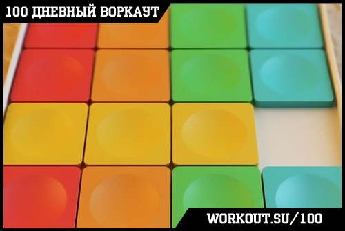
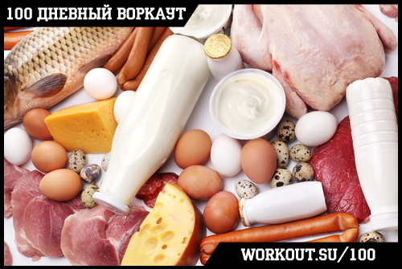
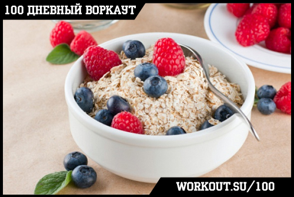
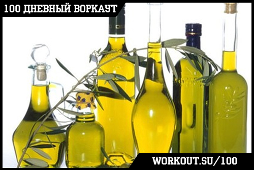
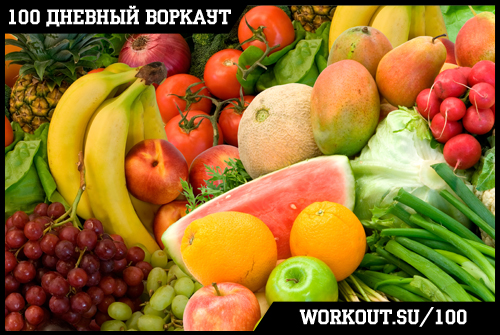
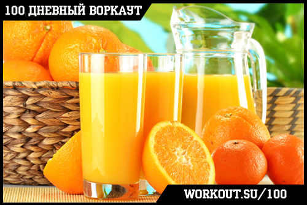
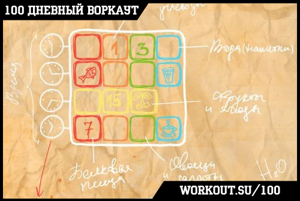
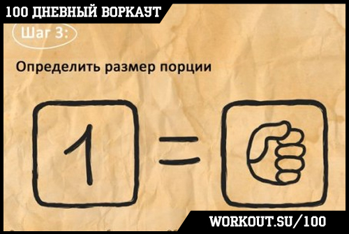

Ранее я обещал вам, что покажу готовые схемы питания, которые вы сможете использовать, если лень заниматься подсчетом калорий самостоятельно. И сегодня я сдержу своё слово и познакомлю вас с одной из таких схем, которая известная под названием
"Пятнашки". Её автором является известный украинский блоггер,
Олег Терн.
Как построить сбалансированный рацион?
1) Обеспечить пластические нужды организма.
0,8-2 грамм полноценного качественного белка на килограмм сухого веса в сутки. 0,5-1,5 грамма жиров (включая незаменимые жирные кислоты, такие как Омега-3 и Омега-6) на килограмм сухого веса. Включить в рацион витамины, минералы, микроэлементы и т.д.
2) Обеспечить достаточное количество клечатки (волокон)
Для взрослого человека сутночная норма клечатки составляет порядка 25-30 грамм. Избыток клечатки может негативно влиять на организм и процесс усвоения питательных веществ.
3) Обеспечить адекватное количество энергии
С помощью простой формулы для рассчета потребности в калориях (25ккал на кг веса для похудения, 30ккал на кг веса для поддержания, 35ккал на кг веса для набора массы) можно получить свою суточную норму калорий. Вычтем из нее энергетическую ценность нутриентов, а остаток заполним углеводами.
4) Обеспечить адаптируемость
Ваша диета должна не только быть эффективной и удовлетворять ваше чувство голода, но так же должна быть гибкой и удобной, чтобы не мешать вам жить своей жизнью и не нарушать социальное взаимодействие. Можно добавить в диету сладости и другие вкусные, но не очень полезные продукты для психологического комфорта.
5) Обеспечить баланс
При правильном подборе всех перечисленных выше параметров вы сможете комфортно и размеренно худеть (или набирать массу), уменьшая количество жировой ткани, но сохраняя мышцы и здоровье в целом. Ошибки же в балансировке нутриентов и подборе калорийности могут привести к плохому самочувствию и даже заболеваниям!
СЛИШКОМ СЛОЖНО? ВОЗМОЖНО, ЕСТЬ СПОСОБ ПРОЩЕ? Можно ли получить сбалансированное меню без всех этих подсчетов и формул? Обойтись без постоянных взвешиваний? Иметь широкий выбор еды и гибкую схему?
Ответом на все эти вопросы является...
Диета Пятнашки

Для того, чтобы у вас было полное понимание того, как она работает, давайте вместе пройдем по всем шагам, которые сделал её автор в процессе разработки.
Шаг 1: Составление перечня продуктов здорового рациона и разделение его на категории
Белковые продукты

Птица:
Курятина, индюшатина, гусятина – это разнообразие вкусов и относительно невысокая стоимость, что делает мясо птицы хорошим источником белка. Расширяют выбор деликатесные варианты, такие как дичь, перепела, страусятина, а также различные субпродукты (печень, сердце и т.п.). Помимо белка, птица богата микроэлементами, например железом и цинком. Следует учитывать, что мясо птицы сильно различается по жирности. Выбирайте менее жирные виды мяса, отделяйте шкуру и видимый жир. В качестве способа приготовления нужно отдавать предпочтение тушению, варке и запеканию. Для вкусового разнообразия несколько раз в месяц можно включать в рацион птицу на гриле. Куриные и индюшиные грудки являются постным источником белка с очень низкой жирностью. Это особенно актуально, если стоит цель похудения.
Яйца:
«Золотой стандарт» или «идеальный» белок – таковы характеристики данного продукта благодаря хорошему аминокислотному профилю. Кроме того, яйца содержат витамины и минералы. Имеются также сорта, обогащенные незаменимыми омега-3 жирными кислотами. Желток яйца содержит довольно много жиров, а также холестерина, за что в течение длительного времени был в «диетологической опале». В последние годы ограничения по употреблению яиц сняты, если они вписываются в суточную калорийность пищи, но для людей с предрасположенностью к сердечно-сосудистым заболеваниями рекомендуется ограничивать потребление цельных яиц одним в день. Баланс нутриентов можно скорректировать, если на 1-2 цельных яйца использовать 2-3 белка. Такая комбинация становится менее калорийной, сохраняет все полезные свойства, обладает хорошими вкусовыми качествами и неплохо утоляет чувство голода. Употреблять яйца стоит в термически обработанном виде.
Красное мясо:
Различные виды красного мяса (говядина, баранина, телятина, свинина) также отличает хороший аминокислотный профиль, высокое содержание витаминов, креатина, микроэлементов, таких как цинк и железо, конъюгированной линолевой кислоты. Высоким содержанием витаминов и микроэлементов особенно отличаются субпродукты. Часто упоминаемые риски для здоровья (сердечно-сосудистые заболевания, онкология), связанные с употреблением мяса, в основном определяются двумя факторами – жирностью и способом его обработки. Риск обусловлен употреблением большого количества жирного мяса, а также прошедшего промышленную обработку; жарением, копчением различных изделий типа колбас, балыков и т.п. Именно поэтому следует отдавать предпочтение нежирным видам мяса, прошедшим варку, тушение или запекание.
Рыба и морепродукты:
Высококачественный источник белка с отличными вкусовыми качествами. Нежирные сорта рыбы содержат большое количество белка и отличаются низкой калорийностью. В то же время большинство жирных сортов отличает высокий уровень полезных жиров, в частности незаменимых омега-3 жирных кислот. Чередование разных сортов рыбы не только снижает приедаемость рациона, но и делает его полезнее. Следует отметить, что морская рыба (особенно крупные хищники) может содержать большое количество метилртути. По этой причине для беременных и маленьких детей ее употребление рекомендуется ограничивать 2 порциями в неделю. Однако если изучить таблицы содержания ртути в рыбе, то можно подобрать безопасный вариант. Нежирным и вкусным источником белка являются морепродукты – кальмары, крабы, креветки, мидии, рапаны, криль и др.
Кисломолочные продукты:
Нежирные (3-5%) творог, греческий йогурт, а также сыры рикотта, брынза и другие (в пределах 3-7% жирности) обогатят рацион не только белком, но и важным микроэлементом кальцием. Эти продукты могут хорошо разнообразить вкус еды, поскольку их можно употреблять в различных видах: в сладком, соленом, без добавок, в комбинации с овощами, фруктами и другими продуктами. Более жирные сорта сыра являются очень калорийными, и их потребление следует нормировать. Если вы не подсчитываете калории, лакомиться жирным сыром можно раз в неделю в зигзаг. Белковые коктейли, произведенные из сухого молока, яичного белка или сои, протеиновые коктейли являются неплохим источником диетического белка с полноценным составом и разнообразными вкусами и удобны в применении. Не стоит переоценивать данный пищевой продукт – это скорее пищевая добавка, чем полноценный заменитель пищи, но и избегать его нет причин.
Бобовые:
К группе белковых продуктов также можно отнести бобовые, невзирая на высокое содержание в них углеводов. К бобовым также относится соя и, соответственно, соевые продукты. Несмотря на некоторые предостережения по поводу содержания в них фитоэстрогенов, причин для полного отказа от данной группы продуктов нет – в порции любых соевых продуктов содержание этих веществ не несет рисков для здоровья.
Арахис из-за высокого содержания жира следует нормировать так же, как другие орехи (см. “Источники полезных жиров”).
Комплексные Углеводы

Каши:
Гречневая, овсяная, перловая, ячменная каши, рис различных сортов – вкусные и полезные комплексные источники углеводов. При умеренной калорийности включают большое количество полезных веществ, в т.ч. витаминов и клетчатки.
Изделия из твердых сортов пшеницы:
Уместно упомянуть средиземноморскую диету, которая является одной из признанных версий рационального здорового питания. Помимо использования оливкового масла, отличается большим количеством продуктов из пшеницы твердых сортов: макаронов, спагетти, равиоли, листов для лазаньи. Именно благодаря средиземноморской кухне эти продукты обрели мировую популярность. Кроме высоких вкусовых качеств, такие макаронные изделия хорошо насыщают, перевариваясь до 8 ч, обеспечивают хороший контроль над аппетитом.
Хлеб:
Хлеб является неотъемлемой частью большинства традиционных и современных культур питания. Однако следует иметь в виду не только богатый состав этого продукта, но и довольно высокую калорийность, особенно это необходимо учитывать при похудении. Отдавайте предпочтение хлебобулочным изделиям грубого помола, ржаному хлебу, нежирным вариантам типа лаваша. Белый хлеб и батоны не исключаются, но если стоит цель похудения, их количество необходимо ограничивать.
Картофель:
Картофель – еще один продукт с незаслуженной негативной репутацией среди худеющих. Никаких угроз для фигуры он не несет, пока вписывается в правильную схему рациона. При этом картофель богат полезными минералами, и будучи приготовленным без добавления жира, обладает довольно умеренной калорийностью.
Супы:
В данном разделе можно вспомнить о супах. Их нельзя однозначно назвать углеводистым продуктом. Нередко в бульоне содержится много жира, и это вряд ли улучшит вашу диету. Вместе с тем порция нежирного супа по калорийности примерно равна порции других углеводов. Так что если вы хотите иметь в своем рационе супы, их можно готовить несколько раз в неделю.
Жиры

Полезные:
Планируя список продуктов питания, не стоит забывать о дополнительных источниках полезных жиров. К ним относятся растительные масла (оливковое, льняное, рапсовое и др.), орехи, семечки сушеные (после термической обработки полезные жиры теряют свои свойства), оливки, маслины, авокадо, а также рыбий жир в капсулах. Достаточное количество жиров в диете необходимо для нормального функционирования эндокринной системы, хорошего настроения и самочувствия, здоровья кожи, волос и ногтей и множества других функций организма.
Следует иметь ввиду, что избыток любых жиров и калорий не принесет вам положительных результатов и может оказать негативное влияние на здоровье в далекой перспективе. Нормируйте потребление перечисленных продуктов. В один день необходимо употреблять либо 15-20 г растительных масел, добавляя их к салатам или другим продуктам, либо 30-50 г сушеных орехов и семечек, либо в виде добавки к пище можно использовать маслины и авокадо. Также можно употреблять рыбий жир в капсулах согласно инструкции по применению (после консультации с врачом).
Овощи и фрукты

Овощи и фрукты отличает богатый минеральный состав, витамины, биологически активные вещества, такие как фруктовые кислоты, пектины, камеди и т.п. Важным компонентом является клетчатка. Современные городские жители потребляют ее в 2-4 раза меньше нормы, и это повышает риск развития сердечно-сосудистых, онкологических заболеваний, нарушает работу пищеварительной системы.
Овощи:
Сырые овощи и зелень, грибы, кукуруза, консервированные овощи (зеленый горошек), овощи обработанные (капуста цветная, брокколи, кабачок, репа), стручковая фасоль, морковь, капуста, редис, лук зеленый, морская капуста, укроп, петрушка, шпинат, руккола, щавель и др. Старайтесь потреблять растительную пищу разного цвета. Это позволит расширить подбор полезных питательных веществ в рационе. Отдавайте предпочтение сырым растительным продуктам, особенно листовым зеленым овощам, но при этом не игнорируйте термически обработанные овощи и фрукты и даже соленья в умеренных количествах. Включайте в диету больше сезонных продуктов, они зачастую обладают более высокими вкусовыми качествами и намного дешевле.
Фрукты:
Яблоко, гранат, персик, ананас, груша, апельсин, банан, киви, грейпфрут, мандарин, манго, дыня и т.д.
Ягоды:
Клубника, малина, смородина, черника, черешня, вишня, крыжовник, арбуз.
Большинство экспертных организаций в сфере здоровья, в т.ч. Всемирная организация здравоохранения (ВОЗ), рекомендуют увеличивать потребление овощей и фруктов до 5-8 порций в день и отмечает, что это положительно влияет на здоровье и продолжительность жизни.
Напитки

Достаточная гидратация – важное условие здоровья и хорошего самочувствия. Для утоления жажды используется широкий спектр напитков, каждый из которых обладает как преимуществами, так и недостатками.
Ряд напитков содержит дополнительные калории. В этом и заключается их главный минус – потребление нескольких стаканов в день по калорийности равносильно порции твердой пищи. При этом жидкие калории практически не насыщают, и такие напитки содержат меньше полезных питательных веществ. Это важно учитывать, если вы хотите похудеть. В таком случае жидких калорий следует избегать. В то же время их недостаток может превратиться в достоинство при наборе веса. Если не удается сдвинуть его с мертвой точки, жидкие калории помогут повысить калорийность рациона без перегрузки пищеварительной системы.
Соки, морсы, компоты, лимонады:
содержат сахар как естественный, так и рафинированный. Положительным в данной группе напитков является приятный вкус. Нередко они содержат витамины и микроэлементы, особенно свежевыжатые соки. Эта группа напитков хорошо утоляет жажду и помогает избежать обезвоживания при очень высокой температуре воздуха.
Молоко и жидкие молочные продукты:
Хороший источник кальция и белка. Следует учитывать содержание жира в этих продуктах, особенно тем, кто легко набирает лишний вес.
Кофе и Чай:
Кофеинсодержащие продукты, такие как чай, кофе и мате, богаты минералами, витаминами и биологически активными веществами и ценятся своими вкусовыми качествами. В то же время нерационально потреблять их в слишком больших количествах – достаточно 1-2 чашек в день.
Травяные чаи (мятный чай, каркаде и др.) подходят для расширения вкусового разнообразия и не содержат кофеина.
В чай и кофе можно добавлять сахар, в этом случае они становятся калорийными напитками с описанными выше свойствами. Если вам нравится сладкий вкус, но вы не хотите потреблять дополнительные калории, можно использовать заменители сахара.
Газировка:
Газированные напитки содержат растворенную углекислоту, за счет чего сдвигают кислотно-щелочное равновесие в организме в кислую сторону. При постоянном употреблении это может нарушать кислотно-щелочной баланс и негативно сказываться, например, на здоровье костной ткани. В то же время исключать их полностью нет причин.
Шаг 2: Составление схемы рациона

В самом начале этой неделе мы уже обсудили с вами концепцию баланса калорий, и мы настоятельно рекомендуем начать разбираться со своим рационом с так называемой "сбалансированной схемы".
В каких случаях вам подойдет сбалансированный рацион?
- если у вас не стоит цели набирать или терять вес, просто хотите питаться с пользой для здоровья;
- если вы начинаете новый цикл похудения или набора веса для того, чтобы правильно настроить диету и войти в режим;
- раз в 4-6 месяцев в качестве паузы в диете, если у вас много избыточного веса и продолжительность похудения составит год и более.
Набор продуктов полученный на первом этапе можно разбить на любое удобное количество приемов пищи, но для начала рекомендуются стандартные четыре. Каждый из этих приемов пищи будет состоять из 4-х частей (о размере каждой части/порции будет на следующем шаге сказано), по одной на каждую категорию продуктов- белковые, сложные углеводы, салаты, вода (напитки).
В течение 3-4 недель соблюдайте схему питания, контролируя динамику веса. Учтите, что вес может меняться в течение дня, поэтому старайтесь взвешиваться в одно и то же время и смотреть на средний вес за несколько дней.
Если ваш вес стабилен, то приход калорий равен расходу. Если вы не ставите своей целью изменение веса, то можете питаться по этой схеме, заниматься спортом, улучшая постепенно свои кондиции. К этой же схеме следует возвращаться после циклов похудения или набора веса.
Если вес снижается, то у вас дефицит калорий. В зависимости от цели, вы можете либо скорректировать калорийность, увеличить размер порций, либо оставить все как есть, если хотите похудеть и вам комфортно на текущей схеме.
Если вес увеличивается, то вы имеете избыток калорий. Принципы коррекции не отличаются: регулируйте размер порций, выбирайте менее жирную пищу. Если вы долгое время до того придерживались нерациональных диет, то не торопитесь корректировать рацион, лучше подождать стабилизации веса, чем заново попасть в порочный круг неправильного похудения.
Для начала попробуйте питаться через равные промежутки времени и постепенно подберите наиболее удобный вариант. Также вы можете менять порядок приема порций еды в схеме и даже разбивать рацион на большее количество приемов пищи, например делить фрукты на несколько приемов. Однако прежде чем что-то менять, попробуйте стандартную схему, возможно, она вам подойдет лучше всего.
Кстати, в данной схеме питания нет никаких ограничений по выбору времени для приема пищи, поступайте как вам удобно. Например, если вам нравится поздний ужин, это допустимо, хотя желательно ужинать не позже чем за 1,5-2 часа до сна.
Шаг 3: Определить размер порции

Размер порции в диете равен размеру вашего кулака. Это ориентир, который всегда с собой, он пропорционален размеру вашего тела и поэтому подстроен под вас. Не бойтесь ошибиться, небольшие погрешности допустимы и не влияют на результат, удобство и комфорт здесь важнее идеальной точности.
Размер порции примерно равен размеру вашего кулака. Это удобно, потому что позволяет всегда иметь под рукой возможность определить размер порции. Кроме того, ваш кулак пропорционален размеру вашего тела, поэтому в этом параметра заложена также некоторая индивидуализация. Для обладателей слишком больших или слишком маленьких кулаков размер порции можно увеличивать/уменьшать размер порции на 10-15%. Здесь не нужно бояться допустить ошибку или некоторую погрешность в измерениях, потому что они не будут иметь существенного влияния на итоговый результат.
Если же вы хотите более точные цифры, то для этого необходимо взвесить порцию белкового блюда или фруктов. Для женщин в среднем ее вес составляет 140-160 граммов, для мужчин – 200-220 граммов или немного больше (но не меньше). Для более точной настройки диеты вы можете время от времени подсчитывать калорийность и состав полученного меню, но зачастую в этом нет необходимости.
Заключение
В первом приближении мы познакомили вас с этой готовой схемой, но рекомендуем скачать красивый PDF файл со всеми схемами и табличками по
ссылке.
И в заключение хочется напомнить, что диета
"Пятнашки" является усовершенствованной версией другой разработанной Олегом схемы питания, под названием
"3 кулака"
. Какой из них пользоваться - решайте сами. В общем плане они очень похожи, разве что
"Пятнашки" более детально проработаны и в настоящее время автор поддерживает и развивает именно эту свою разработку.
======> День 14. Правильный образ жизни, а не диета